Community (Marketing)
Use the Community option to collaborate with other professionals — chat with them and post work requirements on the Dashboard Community.
Path
Log in to your CA CloudDesk Partner Desk. From the bottom footer of the dashboard, click Community. This opens the Community page with tiles like Chat, Dashboard Community, My Offer, Transfer Work, Received Work and Community Policies.
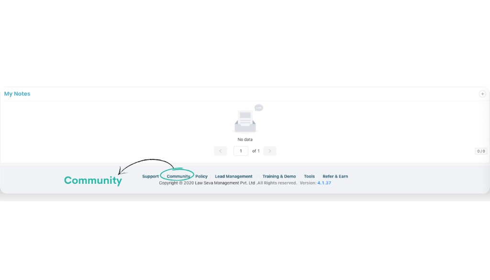
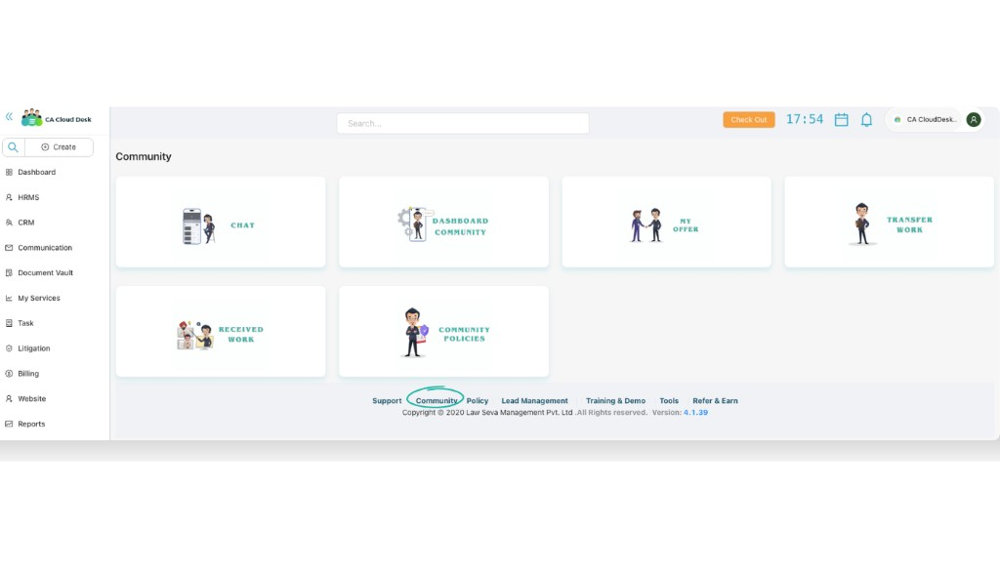
Community tiles at a glance
The Community page is divided into multiple tiles:
- Chat — chat with community members directly from CA CloudDesk.
- Dashboard Community — post your work requirements and view offers from others.
- My Offer, Transfer Work, Received Work, Community Policies — additional options to manage offers, assigned work and view guidelines.
a. Chat
Open the Chat tile
On the Community home, click the Chat tile. This opens the Community chat interface.
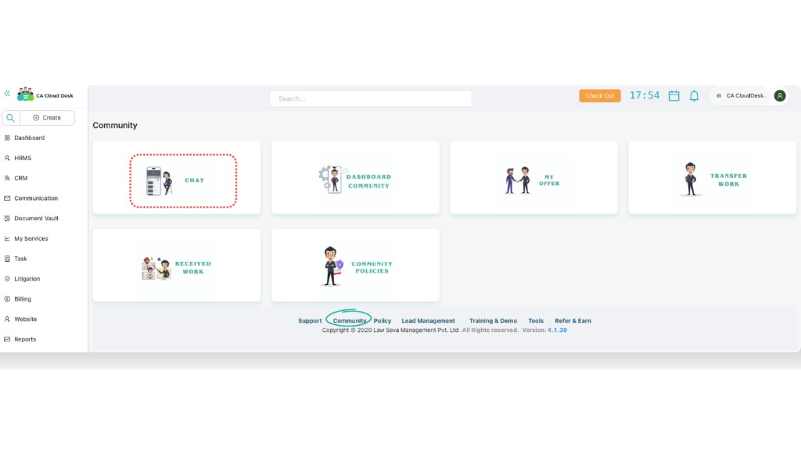
Use internal and WhatsApp chat
Inside the chat window you can see your community list on the left and the selected conversation on the right. Type your message in the box below to chat with any community member.
From here you can communicate in the internal CA CloudDesk chat. Where configured, you can also start or continue WhatsApp conversations with the same contacts directly from this screen.
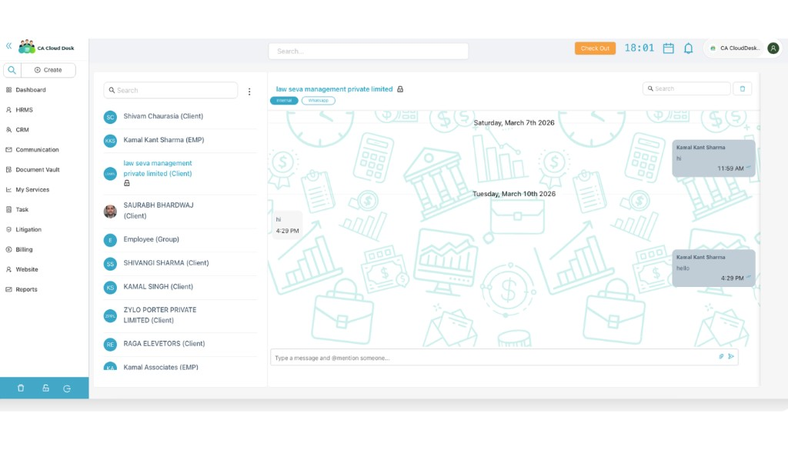
b. Dashboard Community
Open the Dashboard Community tile
From the Community home, click Dashboard Community. This opens the dashboard where you can see existing community posts and create a new post from the panel on the right.
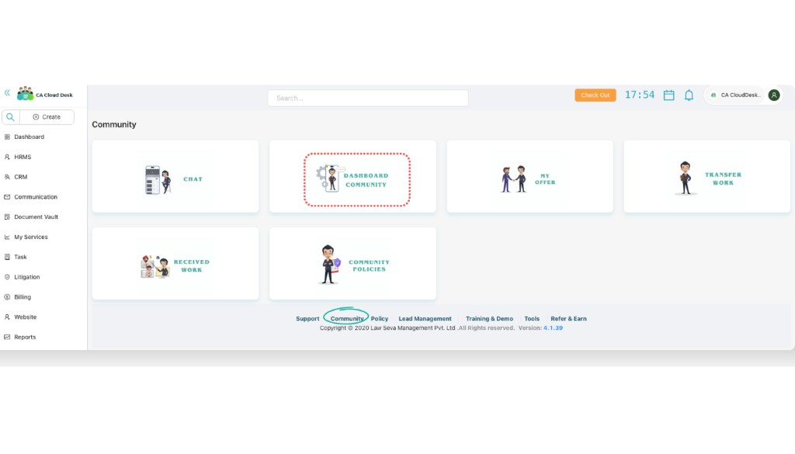
Create a new community post
On the right side, under Add Post, fill in the details of the work you want to post and then click Create a post.
The Add Post form includes the following fields:
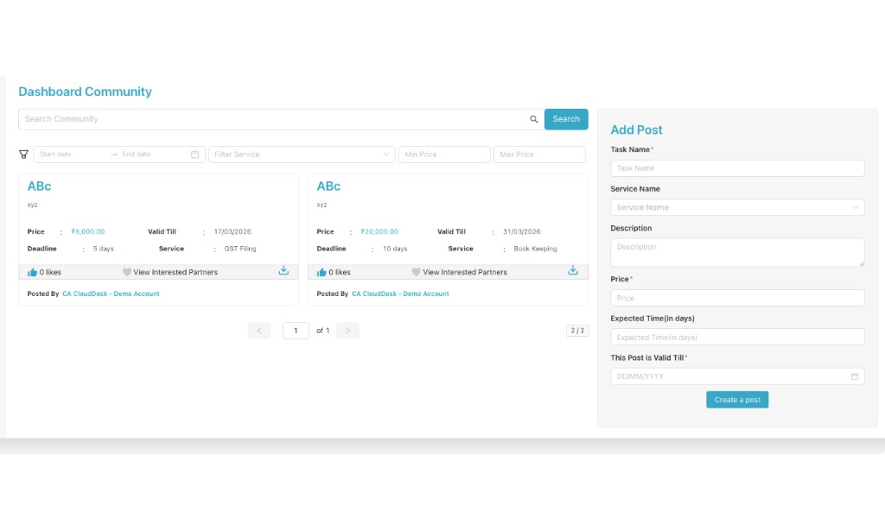
Search & filter community posts
Search and narrow down posts
At the top of the Dashboard Community you can search and filter existing posts to quickly find relevant work.
You can:
- Search by text using the Search Community box.
- Filter by Start date and End date.
- Filter by Service using the service drop-down.
- Filter by Min Price and Max Price to match your budget.
c. My Offer
From the My Offer tile you can see the status of all offers that you have given on community posts.
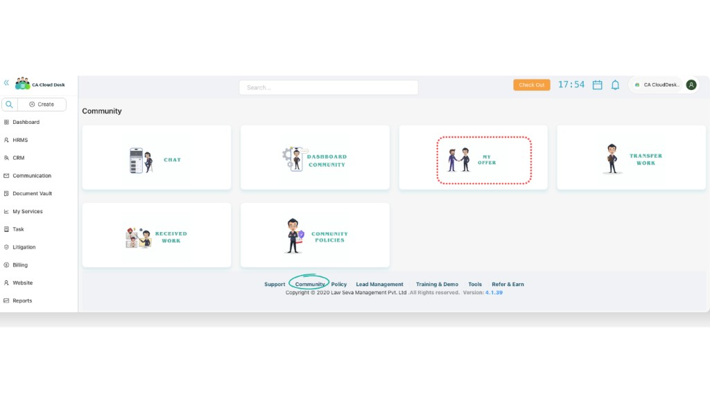
The My Offers list shows each offer with the following columns:
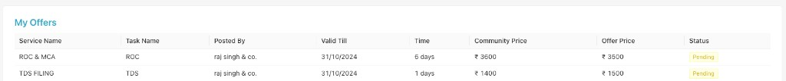
d. Transfer Work
Use the Transfer Work tile when you want to transfer work to any employee or to another organisation for execution.
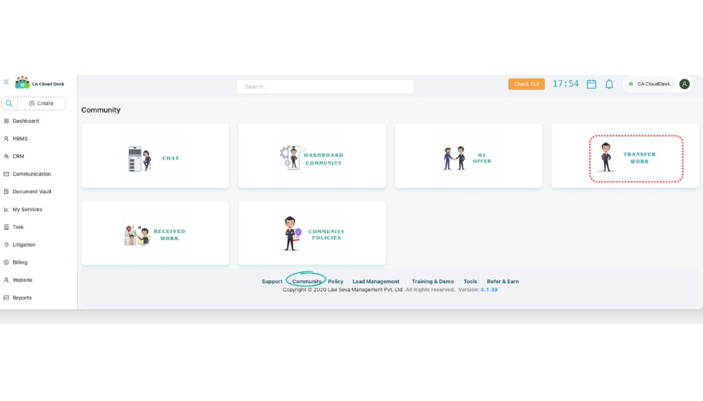
In the Transferred Work screen, select the service, choose the assignee (employee) or assigned organisation and transfer the task. Employees can then view all transferred work with these columns:
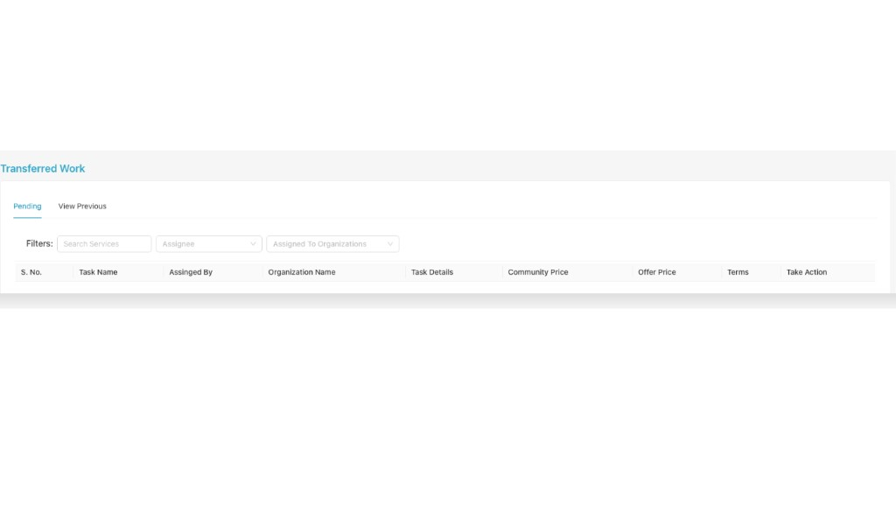
e. Received Work
The Received Work tile shows tasks that other community members or organisations have assigned to you.
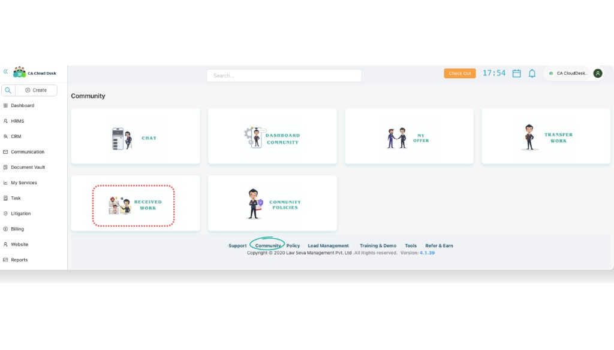
In the Received Work screen you can check services assigned to you or to your organisation. The list contains the same key columns:
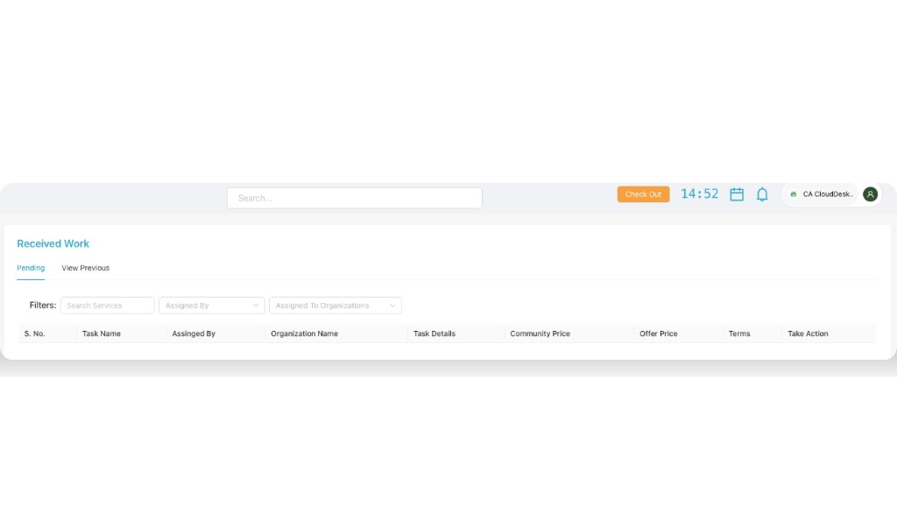
f. Community Policies
From the Community Policies tile you can open and read all policies, rules and guidelines related to using the Community features.
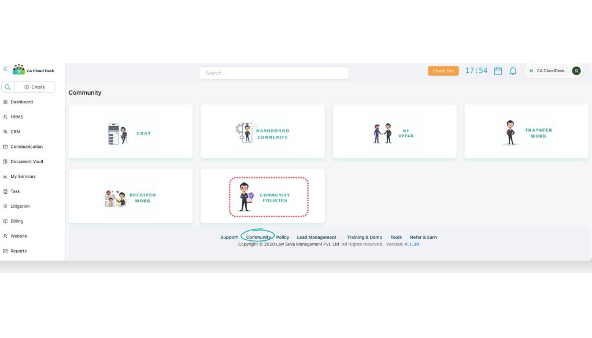